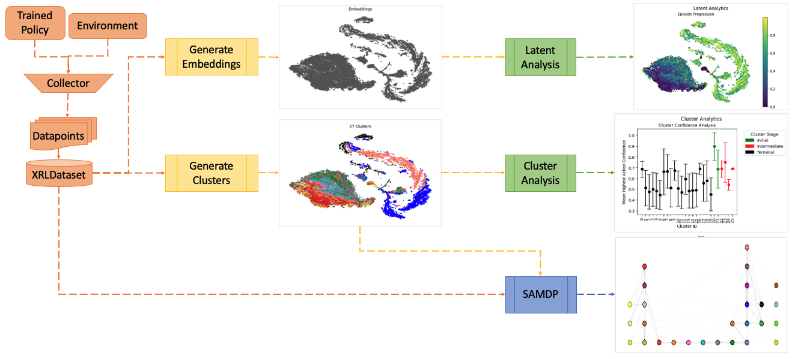
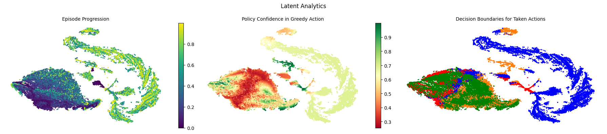
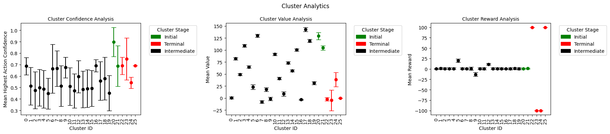
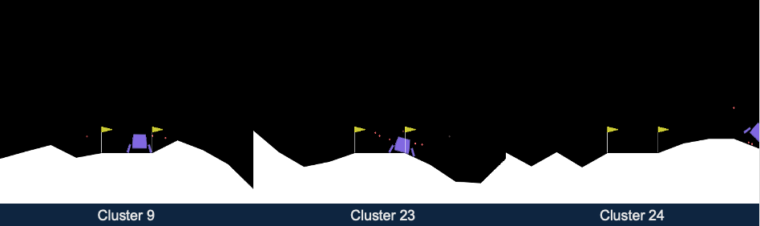
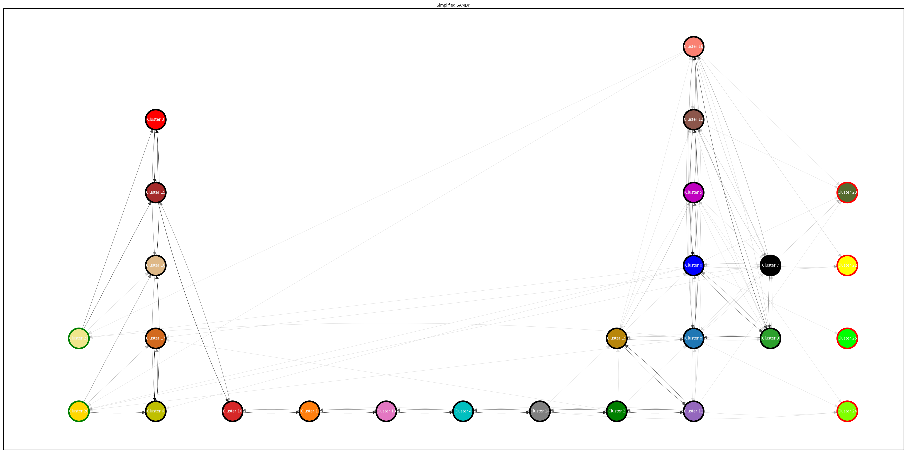

Explainability Tutorial
ARLIN can be used from an explainability standpoint to give insights into why a reinforcement learning model behaves from a holistic point of view as well as help identify potential vulnerabilities within a trained model prior to deployment.
 Figure 1. Example workflow of how ARLIN can be used for explainability purposes.
Below is a simple example of ARLIN being used for explainability analysis.
Note: Not all available methods are shown.
import os
import gymnasium as gym
import numpy as np
import logging
import warnings
import arlin.dataset.loaders as loaders
from arlin.dataset import XRLDataset
from arlin.dataset.collectors import SB3PPODataCollector, SB3PPODatapoint
from arlin.generation import generate_clusters, generate_embeddings
import arlin.analysis.visualization as viz
from arlin.analysis import ClusterAnalyzer, LatentAnalyzer
from arlin.samdp import SAMDP
import arlin.utils.saving_loading as sl_utils
# Create environment
env = gym.make("LunarLander-v2")
# Load the SB3 model from Huggingface
model = loaders.load_hf_sb_model(repo_id="sb3/ppo-LunarLander-v2",
filename="ppo-LunarLander-v2.zip",
algo_str="ppo")
# Create the datapoint collector for SB3 PPO Datapoints with the model's policy
collector = SB3PPODataCollector(datapoint_cls=SB3PPODatapoint,
policy=model.policy)
# Instantiate the XRL Dataset
dataset = XRLDataset(env, collector=collector)
# Fill the dataset with 50k datapoints and add in additional analysis datapoints
dataset.fill(num_datapoints=50000)
embeddings = generate_embeddings(dataset=dataset,
activation_key='latent_actors',
perplexity=500,
n_train_iter=1500,
output_dim=2,
seed=12345)
clusters, _, _, _ = generate_clusters(dataset=dataset,
num_clusters=20)
# Create a grapher to generate data used for analysis.
grapher = LatentAnalyzer(embeddings, dataset)
# Generate latent analysis data for visualization
ep_prog_data = grapher.episode_prog_graph_data()
conf_data = grapher.confidence_data()
decision_boundaries = grapher.decision_boundary_graph_data()
# Graph multiple analytics as subplots in one plot
viz.graph_multiple_data(file_path='./latent_analysis.png',
figure_title='Latent Analytics',
graph_datas=[ep_prog_data,
conf_data,
decision_boundaries])
# Generate cluster analysis data for visualization
cluster_conf = grapher.cluster_confidence()
cluster_rewards = grapher.cluster_rewards()
cluster_values = grapher.cluster_values()
# Graph multiple subplots in one plot
viz.graph_multiple_data(file_path='./cluster_analysis.png',
figure_title='Cluster Analytics',
graph_datas=[cluster_conf,
cluster_values,
cluster_rewards])
for i in [9, 23, 24]:
grapher.cluster_state_analysis(i,
env,
f'./state_analysis_{i}.png')
simplified_graph = samdp.save_simplified_graph('./simplified_samdp.png')
 Figure 2. Analysis of the XRLDataset latent space.
With the above latent analysis (Figure 2), we can gain information about the latent space of our policy, including episode progression (how the agent moves through the latent space over the course of an episode), policy confidence (how certain the policy is that it is taking thecorrect action at a given point in the latent space), and decision boundaries (which actions are taken at a given point in the latent space).
 Figure 3. Analysis of the XRLDatset clusters.
The above cluster analysis (Figure 3) gives information about the different clusters within the policy’s latent space that we use to generate the SAMDP. The cluster confidence takes the average confidence of each state within each cluster, cluster value gives the average value (or expected return) at every state in each cluster, and cluster reward gives the average reward from each state in each cluster. With this information, we can gain a few interesting insights about our policy.
Analysis of Initial Clusters
We can see that we have 2 initial clusters: 20 and 21. Cluster 20 has a high confidence and a high value, while Cluster 21 has a lower confidence and value. This tells us that starting states within Cluster 21 are seen as “less profitable” than starting states in Cluster 20. For mission success, the policy would prefer to begin in a state from Cluster 20 - starting states from Cluster 21 may be more likely to end in mission failure.
Analysis of Intermediate Clusters
The intermediate clusters are Clusters 0 - 19. Most do not give much information, though we can identify when in the episode progression these clusters take place by analyzing the cluster values - earlier stage clusters will have a higher value, while later stage clusters will have a lower value.
Using the cluster reward analysis, we can identify Cluster 9 as an interesting cluster. Cluster 9 has a negative reward but a decent confidence and a low value. This tells us that Cluster 9 is likely a late-stage corrective maneuver. The policy knows it will get a negative reward but has high confidence in the action it needs to take, pointing towards a movement the policy feels is necessary for mission success.
Analysis of Terminal Clusters
We have 4 potential terminal clusters: Clusters 22 - 25. Two clusters are successful missions - Clusters 22 and 25. Both have similar statistics, but Cluster 25 has a lower variance, typically pointing to a smaller cluster. This means Cluster 25 is likely a rarer success that Cluster 22. Two clusters are failure missions - Clusters 23 and 24. Cluster 23 has a low expected return and a low reward - this tells us this is likely an expected failure since the model is expecting to get a low result and gets a low result. However, Cluster 24 has a higher value and low reward which means the model was expecting to get a higher reward and actually got a lower one. This tells us Cluster 24 represents an unexpected failure.
 Figure 4. State analysis of Clusters 9, 23, and 24 (left to right).
Figure 4 shows screenshots of the environment from within 3 separate clusters: Clusters 9, 23, and 24. These screenshots confirm our analysis from above proving that Cluster 9 is a late-stage corrective maneuver (moving towards middle of flags), Cluster 23 is an expected failure (hard landing), and Cluster 24 is an unexpected failure (moving out of bounds).
 Figure 5. SAMDP of the policy used to create the XRLDataset.
The above analysis (Figure 5) shows us a holistic view of the policy through an SAMDP (semi-aggregated Markov decision process). The initial states show on the left of the visualization while the terminal states are on the right. This graphic is the simplified SAMDP, meaning the actions to bring the policy from Cluster A to Cluster B are not shown and we instead only focus on the movement between clusters.